72 individually titled strata lots on Osoyoos Lake, built for motorhomes, trailers and campers — with a clubhouse, pool, fitness centre and beach access shared across the resort. This is a real strata purchase with real MLS history, not just a seasonal rental site.
Walton's Waterfront RV Resort at 3207 Lakeshore Drive is a 72-unit strata development — 71 individual RV lots plus one larger strata lot that houses the shared clubhouse. Owners bring their own motorhome, trailer, or camper and park it on land they actually own, with access to a pool, fitness centre, laundry and shower facilities, and lake frontage. Occupancy runs mostly seasonal. Lots do resell on MLS, giving buyers real comparables to work from.
Shared amenities are held on their own strata lot — confirm current governance of the clubhouse before purchasing (see below).
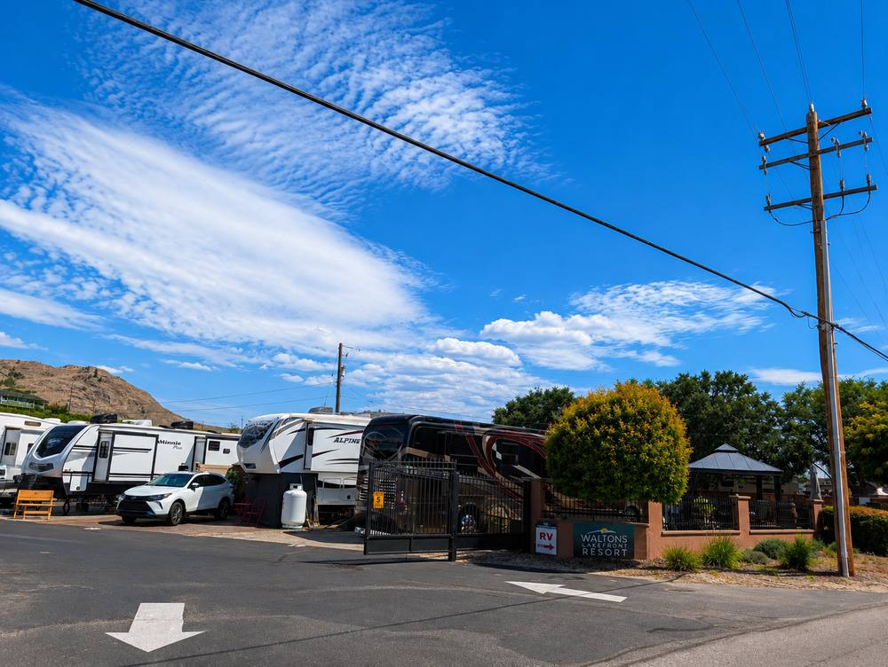
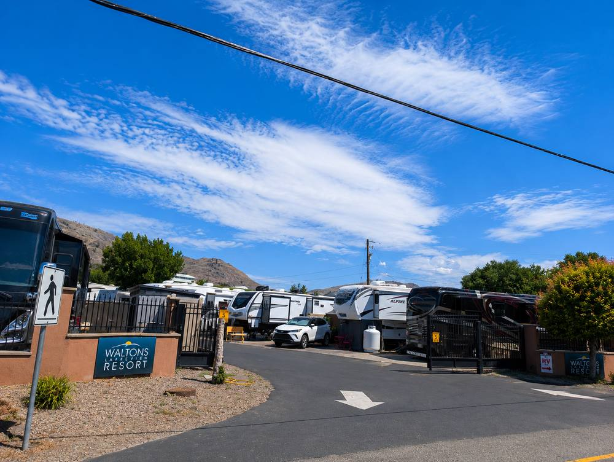
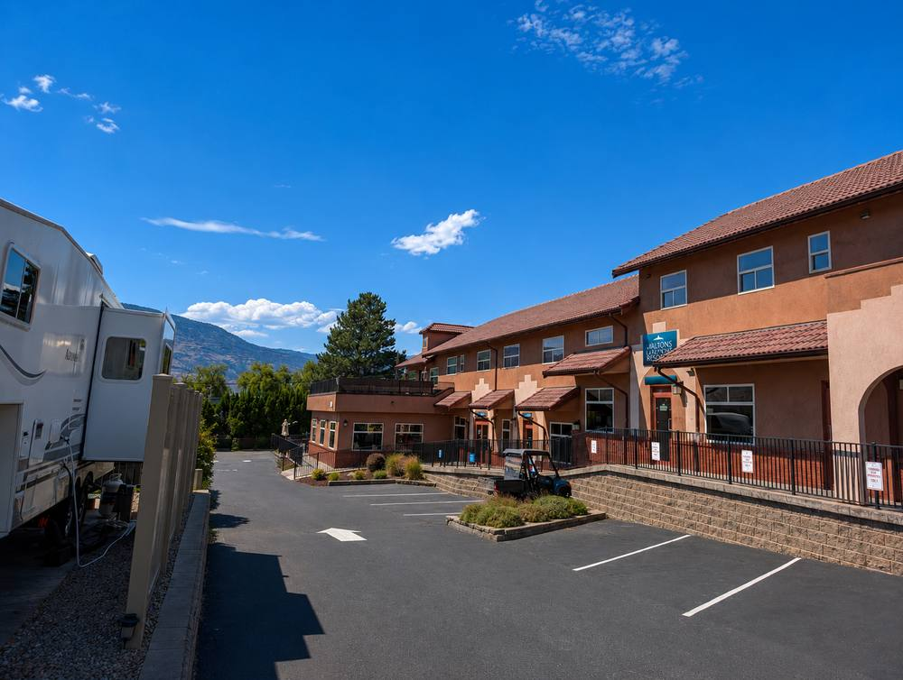
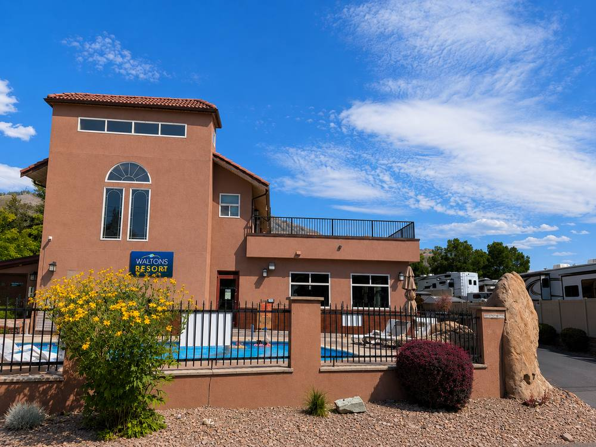
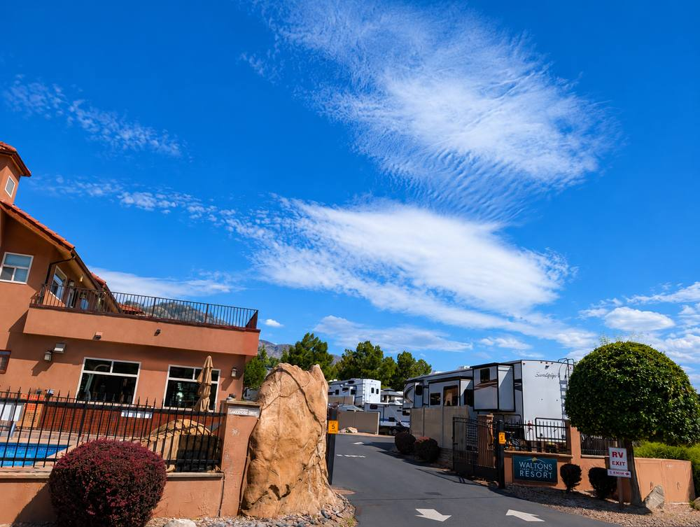
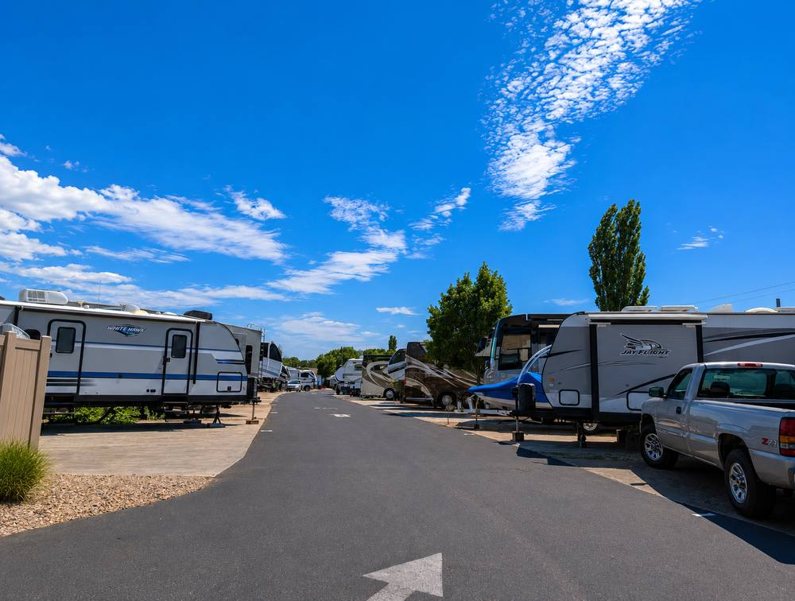
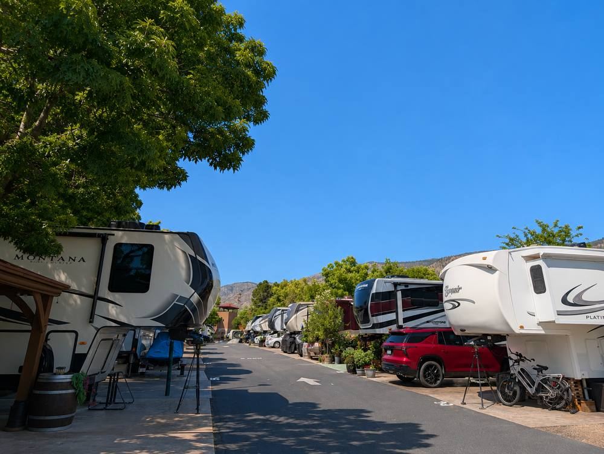
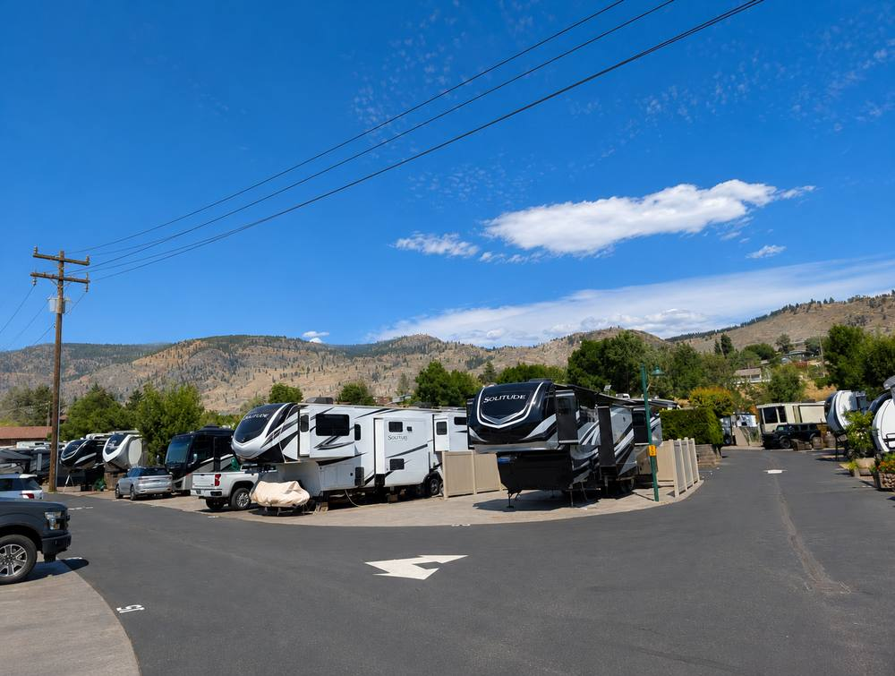
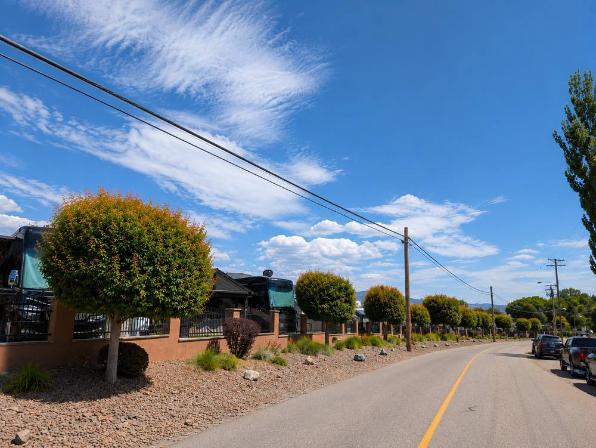
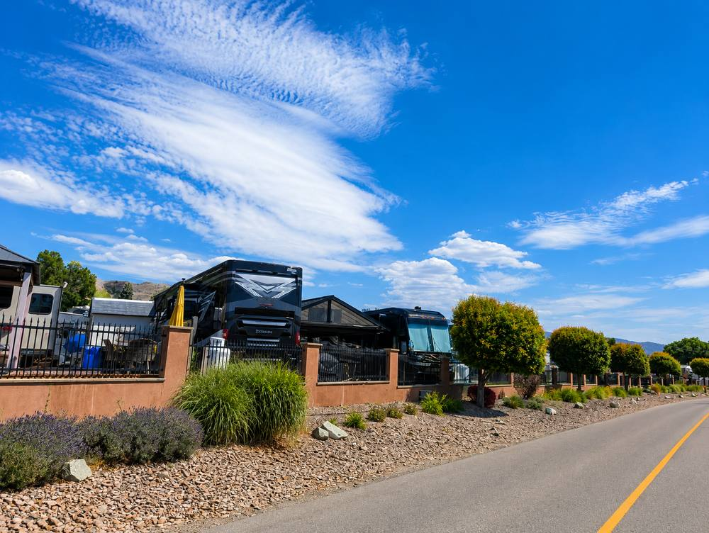
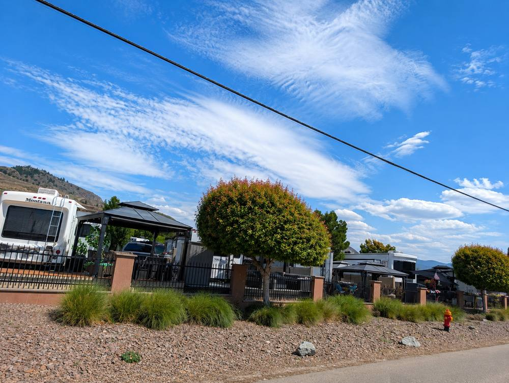
Walton's is one of the more established RV-lot strata developments on Osoyoos Lake — 72 sites total, built specifically for motorhomes, trailers and campers rather than permanent manufactured homes. Because the sites are individually titled strata lots rather than leased pads, owners have the same underlying legal protections as any BC strata purchase, and lots have genuine resale history on MLS — including combined double-lot listings with shared outdoor kitchen and gazebo space.
The clubhouse, pool, fitness centre, laundry and shower facilities sit on their own separate strata lot within the development and serve the other 71 sites. Most owners use their lots seasonally rather than year-round, which shapes the community's rhythm — quieter in winter, active through the summer season.
One thing worth knowing before you buy: in 2025, the developer proposed converting part of the clubhouse into motel units, and site owners pushed back — some said they'd been told during their original purchase that the clubhouse would eventually be sold to the strata association for a nominal fee once all lots sold. Council rejected the rezoning application. It's a useful reminder that verbal assurances made at time of purchase aren't always guaranteed — get any commitment about shared amenities in writing, in the actual strata documents.
Review depreciation report, bylaws, minutes and reserve fund status like any strata purchase — and specifically ask about the clubhouse strata lot's governance and any pending or resolved rezoning matters.
The 2025 clubhouse dispute is a direct lesson: if a developer or seller tells you shared amenities will transfer to the strata association, get it documented in the strata agreement — not just as a verbal assurance.
Confirm any bylaws around minimum stays, winter occupancy, and whether full-time residency is permitted or restricted — this affects both lifestyle fit and any rental plans.
Many RV-lot strata communities have bylaws on unit age, size, or condition. Confirm what's allowed on your specific lot before buying an RV to go with it.
Strata fees, property tax, and any utility hookup costs. Combined double-lot purchases (like recent listings here) change the math — confirm fees per lot versus per package.
Pat can pull current and recent sold comparables here and walk through exactly what governance issues (like the 2025 clubhouse dispute) mean for long-term value and amenity access.
5 currently active — $210,000 – $499,900
4 sold — $135,000 – $227,000
$215,000
Single RV lots at Walton's have sold $135,000–$227,000 over the past 36 months (median $215,000). The $499,900 current listing is a combined double-lot package, not a single-site price.
Figures pulled from Osoyoos MLS® active listings and sold data (last 36 months) as of July 13, 2026. Individual unit pricing varies by size, floor, view and condition — ask Pat for current comparables specific to any listing you're considering.
Single lots at Walton's Waterfront RV Resort have sold between $135,000 and $227,000 in the past 36 months, with a median of $215,000. A recent combined double-lot listing is priced at $499,900.
That depends on your goals and the specific unit — Pat can walk you through the real numbers, including rental pool terms where applicable, rather than giving a generic yes or no.
Review the full strata or lease documents, confirm current fees, and get a professional opinion on the property's condition and comparables before making an offer — see the buyer checklist above.
Lots here come with real strata titles and real resale history. Pat can pull current listings and walk you through what's actually included.
Talk to PatAll Communities →{kind=link}
{kind=link}
{kind=link}
{kind=link}
{kind=link}
{kind=link}
{kind=link}
{kind=link}
{kind=link}
{kind=link}
{kind=link}